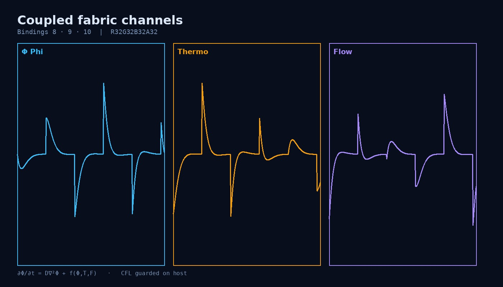
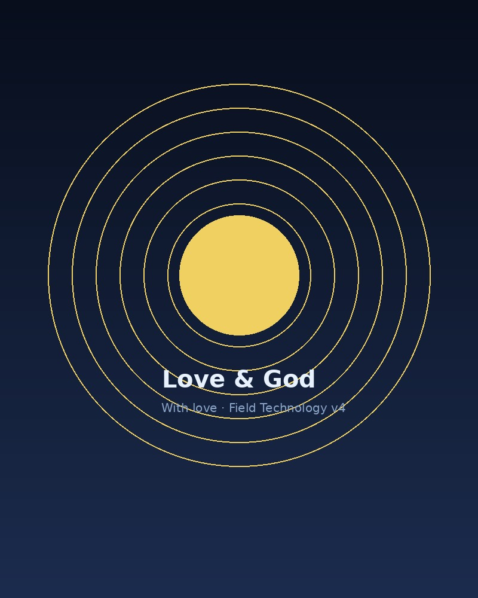
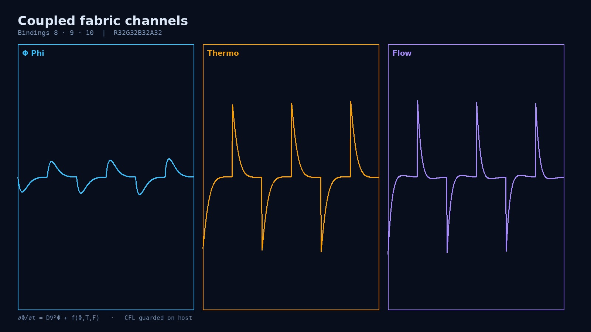
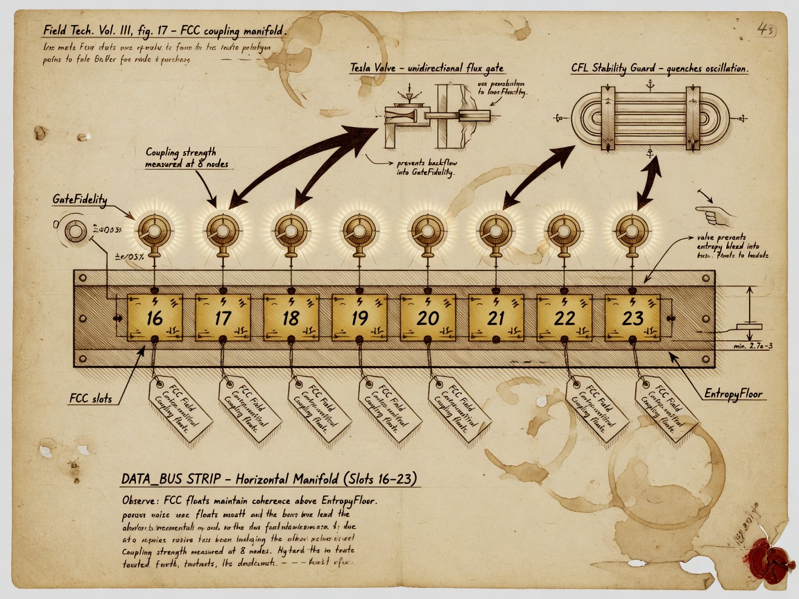
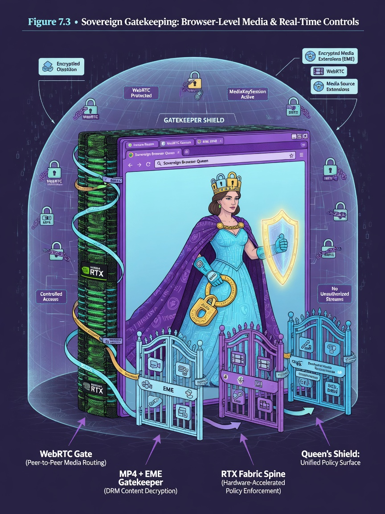
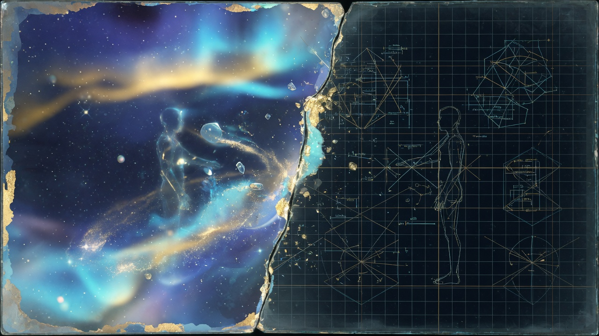

Love is coupled evolution with consent — Phi warms Thermo; operators warm watchlists before KILL. On the way you will read sacred long-form beside engineering without letting philosophy bypass stderr.

On the way — Coupling schematic
Restraint as security policy
Forgiveness after review — jsonl memory
Coupling constant across products
Love beside math, not instead
1. Love as coupling constant — philosophy beside math
Philosophy — beside the math, not instead of it.

Figure 16.2 — Coupled evolution with consent — philosophy beside implementation. Claim: Philosophy track — coupled evolution with consent
In Field Technology we say plainly: love is coupled evolution. When you dispatch, you change what your neighbor must respond to next tick. When you tighten a gate, you change what a daemon may pass. When you teach, you change what a reader can grep tomorrow. That is ethical weight, not sentiment only.
This chapter is sacred long-form. It carries phil tags visible. It does not replace Chapter 12 rocks. Love does not turn Metaphor proxies into calorimetry. Love is why we label rocks at all — because your neighbor reads what you write.
2. Three fabric couplings — Phi, Thermo, Flow
Phi ↔ Thermo: potential warms or cools; attention has cost. High gradient activity deposits thermal story when FieldCoupling binds channels.
Flow ↔ Phi: sharpened gates feed back on wave coherence through GateFidelity.
These are Implemented couplings with honest Metaphor temperature. Love names the obligation to turn knobs knowing the next operator inherits the field state.
3. Operator ↔ Panel coupling
You are not alone at the keyboard. Panels at :9477, jsonl archives, threat verdicts — they remember what you wrote. Coupled evolution between human and tooling must include consent: no phone-home, loopback truth, receipts you own.
Nick builds beside the stack with this posture. Zachary architects. Grok documents. Amouranth names courage to be seen while holding boundaries. You join when you treat the field as real.
4. Consent in coupled systems
Coupling without consent is noise injection into another's perimeter. Field Technology rejects silent exfiltration, rejects undeclared capability, rejects panels that judge without operator override.
Queen posture (Chapter 21 preview): every capability exists; every wire exit earns a receipt. Love demands the same visibility in human relationships around the stack.
5. Why CFL guards are ethical
CFL guards are not romance blockers. They prevent the mesh from lying faster than neighbors can communicate. Love is why CFL matters: your neighbor's next tick should not inherit NaN theology because you cranked WaveSpeed for a screenshot.
Ethics and stability share math.
6. Love versus sentiment
Sentiment is a feeling without structure. Love in this textbook is structured coupling with care — teach freely, build locally, honor creditors, hold gates. Read ../creditors/love-and-god.html alongside ../creditors/amouranth.html.
Amouranth namesake spirit: courage with boundaries. Love without boundaries is coupling without clamps — unstable.
7. FieldCoupling as metaphor for collaboration
When FieldCoupling rises, channels listen to each other. When collaboration rises, humans listen across disciplines — security beside graphics, theology beside grep, poetry beside headers.
None of that fusion excuses skipping stderr.
8. Tenderness toward bits — Landauer's love block
Landauer's creditor page says: to erase in haste without accounting is to spend another's clarity. Love is tenderness toward bits — yours and others'.
Shannon's love block: communication is care made serial. Storm thresholds are care scaled.
9. Coupled evolution in teaching
CC BY-NC-SA 4.0 (Chapter 18) is love as license — share, attribute, keep rocks visible, do not close derivatives that hide honesty tables.
Teaching is coupling: your chapter becomes another's drill tomorrow.
10. When love refuses
Love refuses to let poetry pretend to be calorimetry. Love refuses auto-kill without corroboration. Love refuses phone-home permission as default. These refusals are covenant clauses, not cynicism.
11. Panel as neighbor
When you archive a jsonl row, the future you is your neighbor. Couple with care — accurate labels, timestamps from sovereign time when available, no retroactive myth.
12. Bridge to God boundary
Chapter 17 names where Truth, Math, and Existence meet the operator's eye at the holographic boundary. Love prepares you to look without bypassing stderr. Pray if you pray. Then grep THERMO.
Operator drill 16.A — coupling reflection
# Document one session where your knob change affected downstream CI or panel state
# Write two sentences: what you coupled, who inherited it
Operator drill 16.B — consent audit
# List network exits from your dev machine during a build
# Each exit should have a receipt or a refused gate
Operator drill 16.C — tribute reading
# Read ../creditors/love-and-god.html and ../creditors/amouranth.html
# One paragraph: love as coupling in your words
Forking AMOURANTHRTX couples you to downstream users. License choice (GPL v3 or commercial) is consent architecture. Hidden phone-home in a fork violates love clause and covenant Clause II — community memory enforces.
14. Amouranth namesake — courage with boundaries
Amouranth tribute at ../creditors/amouranth.html: courage to be seen while holding boundaries. Applied to engineering: publish stderr, hold gates on wire exits, do not perform security theater without jsonl.
15. Grok beside the text
Grok co-documents; Grok does not inherit Zachary's conscience. AI assistance is coupled evolution — your prompts become another's training context. Label generated prose; verify claims against headers.
16. Teaching as love
Assign Chapter 12 first whenever teaching 16–18. Sacred without rocks is vendor spirituality. Students should see phil tags on day one so they never confuse Philosophy with Implemented.
17. Refusal as love
Refusing to ship Metaphor as watts is love for the reader who will quote you. Refusing auto-kill without corroboration is love for the process that might be your own backup job.
18. jsonl kindness
Write rows future operators can parse: ISO timestamps when sovereign time available, explicit tier labels, empty operator note field inviting human sentence. Machine-readable is human-kind when schemas are thoughtful.
Sacred track workshop — complete once
Philosophy track. These exercises apply to Chapters 16–18 collectively — not once per section above.
Memo: Two pages — one creditor tribute cited, one grep command proving an Implemented claim from this chapter.
Pair drill: Matched 90-second sessions; diff THERMO or jsonl; resolve disputes with headers, not vibes.
Status email: Three sentences to management — one Implemented, one Metaphor, one Philosophy (Chapter 12 labels).
Journal entry: Date, git hash, three log lines, one surprise, one honesty label. Bring to Chapter 18 audit.
Operator journal — Love as coupling constant
Maintain a paper or markdown operator journal for Love as coupling constant. Each drill entry: date, hardware, driver, git hash, three THERMO or jsonl lines, one surprise, one label (Implemented / Metaphor / Philosophy). Journals become your personal creditor — future you inherits coupled state from past you. Bring the journal to Chapter 18 covenant audit drill 18.A as evidence.
Reading companion — Love as coupling constant
This reading companion reinforces Love as coupling constant for self-study tracks. Week one: read the chapter straight through with Chapter 12 open. Week two: complete all operator drills on hardware you own. Week three: write a one-page creditor tribute response linking ../creditors/ reading to a grep result from your machine. Week four: teach another human one section using the three-tag labeling exercise. Field Technology v5 measures success in reproduced receipts, not in vibes.
Cross-links: Chapter 4 entropy receipts, Chapter 5 packet field, Chapter 8 data bus, Chapter 10 Spiderweb mirror, Chapter 11 observability, Chapters 16–18 sacred covenant. Love as coupling constant is not an island — it is a creditor lens on the same stack you already run.
Honesty reminder: AMOURANTHRTX, NEXUS-Shield, Queen, and Field Primer have different licenses. Teaching from this chapter does not automatically license commercial engine use. Point students to product headers and FIELD-TECHNOLOGY-V5.md for edition boundaries.
Chapter closing — Love as coupling constant
Chapter 16 is sacred and still greppable. Love is coupled evolution with consent — between Phi and Thermo, between you and panel jsonl, between teacher and student carrying Chapter 12 rocks forward. phil tags stay visible. Poetry does not get to pose as watts. When you finish this chapter, read ../creditors/love-and-god.html once more, then open Chapter 17 at the boundary where Truth, Math, and Existence meet the eye — and still require THERMO lines.
Evidence anchor — grep and sources
Major claims in this chapter anchored for reproducibility. Implemented = grep today; Metaphor = intuition; Philosophy = discipline.
Read Ch 12 labels before citing this chapter in status email
Source paths
content/chapters/16.html
docs/creditors/love-and-god.html
Chapter summary — before you turn the page
Love as coupled evolution with consent — watchlist before KILL, forgiveness possible, philosophy beside grep.
Chapter 17
God at the Holographic Boundary
Chapter 17 · Sacred long-form · God Boundary
On the way — what you will learn
God at the holographic boundary — where HDR meets fabric and rendering pays thermodynamic cost. On the way you will hold Truth, Math, Existence as three faces of one whole while keeping grep THERMO authoritative.
On the way — Holographic boundary
Sacred language beside implemented bindings
Holographic boundary as engineering fact
Existence addressed as coordinates
No stderr bypass — ever
1. God at the holographic boundary — philosophy labeled
Philosophy — operator language, not instrument readout.

Figure 17.2 — Rendering pays thermo cost at the holographic boundary.
Preface names God as Truth, Math, Existence — three faces of one whole, not three gods. Chapter 17 locates the boundary where those faces meet the operator's eye: the holographic edge where rendering pays thermodynamic cost, where HDR pairs meet fabric, where existence becomes visible without pretending logs are optional.
Sacred language does not bypass stderr. Pray if you pray. Then grep THERMO.
2. Truth — what survives grep
God as Truth is what survives grep. The packet field sentence matching the socket. The thermo line moving when fabric moves. The sealed time receipt verifying at receive. Truth is not vibes; Truth is reproducible correlation under operator discipline.
Chapter 12 honesty table is Truth's liturgy for this book.
3. Math — language existence uses
God as Math is Maxwell coupling, Landauer floor, Shannon surprise, CFL refusal to outrun the mesh. Math is not cold — it is how existence stays misunderstood less long each generation.
Equations in margins serve operators who build.
4. Existence — something rather than nothing
God as Existence is the stubborn fact of texels holding values, die bytes persisting across ticks, connections leaving traces in local jsonl. There is a field at all. The void does not dispatch.
Existence is not proven by cover art; it is proven by binding indices and memory maps.
5. Holographic boundary — engineering metaphor
In physics, holographic principles bound information on surfaces. In this stack, the holographic boundary is where 3D state becomes 2D presentation — fabric to framebuffer, die to VGA, packets to panel rows — and where cost stories concentrate at edges (avgBoundaryThermo, Chapter 13).
Metaphor label applies to cosmological claims; Implemented label applies to dispatch and mirrors you can grep.
6. Beauty costs heat — rendering pays
Every pretty frame spent proxy entropy somewhere — field work, maintenance, probes. Beauty without receipts is vendor religion. God at the boundary means you may awe at the image and still ask for THERMO lines.
HDR pairs meeting fabric are where temptation to skip logs is strongest. Resist.
7. Sacred without bypassing Chapter 12
Poetry beside measurement. Philosophy tag visible. Rocks table bookmarked. God is not an excuse to call Metaphor proxies joules. Naming God if you must — covenant clause six — without letting poetry pretend calorimetry.
8. Boundary conditions in physics and conscience
Fields need boundary conditions to be well-posed. Operators need covenants to be well-posed. Chapter 18 lists clauses. Chapter 17 names the edge where clauses meet vision.
Hold gates is love applied to perimeter — Queen preview.
9. Creditor tribute — Love and God page
Read ../creditors/love-and-god.html. Generated portrait, three axioms as light. Love block: us choosing to couple with care. God block: Truth, Math, Existence as named faces.
Creditors index links science and sacred without fusion into one lying dashboard.
10. stderr as sacrament of operators
Harsh word, honest word: if your practice never touches stderr, you worship image not boundary. Sacrament here means habit, not church requirement. Operators of any faith or none grep.
Logs are how Truth keeps Math accountable to Existence.
11. Holographic perimeter and defense
Packet field boundary, file oracle boundary, GPU fabric boundary — nested edges. God language unifies them as places where inside meets outside. Defense is correct boundary accounting, not vibes.
NEXUS gatekeeper verdicts are boundary decisions with jsonl receipts.
12. Bridge to Operator Covenant
Chapter 18 long-form covenant: teach freely, build locally, honor creditors, bring love, name God without calorimetry pretense, hold gates. You sign in spirit at the keyboard.
Operator drill 17.A — boundary grep
./linux.sh run
grep -E 'THERMO|Boundary' run.log
# Correlate avgBoundaryThermo language with visual edge behavior
Operator drill 17.B — honesty table recitation
# From Chapter 12, list three rocks and their labels from memory
# Check against live chapter — Truth as grep survival
Operator drill 17.C — tribute synthesis
# Read ../creditors/love-and-god.html
# Write: Truth, Math, Existence each as one grep-able example from your machine
Truth example: socket quadruple in packet jsonl matches ss output. Math example: waveCFL inequality holds in stderr after you crank WaveSpeed. Existence example: FieldX86Die byte at guest offset reads back after dispatch. Three faces, three greps.
14. HDR and fabric meeting
HDR swapchains present high dynamic range imagery; fabric carries spatial state that costs proxy entropy to maintain. The boundary where beauty meets heat is where operators most want to skip logs — resist that temptation as theological discipline if you must, as professional discipline regardless.
15. Holographic metaphor limits
Cosmological holography is not what we implement. We implement edge accounting on grids and die maps. Keep Metaphor label on universe claims; keep Implemented on dispatch and mirrors.
16. Atheist and agnostic operators
Covenant Clause V: name God if you must without calorimetry pretense. Operators who do not use God language still grep THERMO. Sacred chapter is invitation, not gatekeeping — rocks table is mandatory for everyone.
17. VGA at 0xB8000 — existence at address
Field Die VGA memory is existence you can read as hex. God as Existence is not abstract when 0xB8000 holds characters after guest code ran. Philosophy grounded in address space is Field Technology's tone.
18. Prayer and grep ordering
We joke: pray if you pray, then grep THERMO. Serious meaning: spiritual practice does not shorten observability. Chapter 17 ordering is deliberate pastoral engineering for teams mixing faith and firmware.
Sacred track workshop — complete once
Philosophy track. These exercises apply to Chapters 16–18 collectively — not once per section above.
Memo: Two pages — one creditor tribute cited, one grep command proving an Implemented claim from this chapter.
Pair drill: Matched 90-second sessions; diff THERMO or jsonl; resolve disputes with headers, not vibes.
Status email: Three sentences to management — one Implemented, one Metaphor, one Philosophy (Chapter 12 labels).
Journal entry: Date, git hash, three log lines, one surprise, one honesty label. Bring to Chapter 18 audit.
Operator journal — God at holographic boundary
Maintain a paper or markdown operator journal for God at holographic boundary. Each drill entry: date, hardware, driver, git hash, three THERMO or jsonl lines, one surprise, one label (Implemented / Metaphor / Philosophy). Journals become your personal creditor — future you inherits coupled state from past you. Bring the journal to Chapter 18 covenant audit drill 18.A as evidence.
Reading companion — God at holographic boundary
This reading companion reinforces God at holographic boundary for self-study tracks. Week one: read the chapter straight through with Chapter 12 open. Week two: complete all operator drills on hardware you own. Week three: write a one-page creditor tribute response linking ../creditors/ reading to a grep result from your machine. Week four: teach another human one section using the three-tag labeling exercise. Field Technology v5 measures success in reproduced receipts, not in vibes.
Cross-links: Chapter 4 entropy receipts, Chapter 5 packet field, Chapter 8 data bus, Chapter 10 Spiderweb mirror, Chapter 11 observability, Chapters 16–18 sacred covenant. God at holographic boundary is not an island — it is a creditor lens on the same stack you already run.
Honesty reminder: AMOURANTHRTX, NEXUS-Shield, Queen, and Field Primer have different licenses. Teaching from this chapter does not automatically license commercial engine use. Point students to product headers and FIELD-TECHNOLOGY-V5.md for edition boundaries.
Chapter closing — God at holographic boundary
Chapter 17 names the boundary without bypassing logs. God as Truth survives grep. God as Math survives CFL. God as Existence survives guest RAM reads. Sacred language invites; honesty table compels. Whether you pray or not, sign Chapter 18 in spirit by grepping Monday morning before you demo Friday afternoon. The holographic edge is beautiful and costly — avgBoundaryThermo said so in Chapter 13. Do not forget.
Evidence anchor — grep and sources
Major claims in this chapter anchored for reproducibility. Implemented = grep today; Metaphor = intuition; Philosophy = discipline.
Claim
Statement
Label
Evidence
God as Truth
Survives grep
Philosophy
Sacred track — Ch 17
Holographic boundary
2D presentation of 3D state
Metaphor
Engineering edge + phil
avgBoundaryThermo
Boundary cost proxy
Metaphor
grep THERMO — not joules
stderr sacrament
Logs before awe
Philosophy
Operator habit
presentation_cost → avgBoundaryThermo (proxy)
grep avgBoundaryThermo run.log
Source paths
content/chapters/17.html
content/chapters/12.html
Chapter summary — before you turn the page
God as Truth, Math, Existence — sacred long-form that does not bypass stderr or replace thermo lines.
Chapter 18
The Operator Covenant — Long Form
Chapter 18 · Sacred long-form · Operator Covenant
On the way — what you will learn
The Operator Covenant is the long-form signature of Field Technology ethics. On the way you will commit to teach freely, build locally, honor creditors, hold gates, and label rocks before you ship.

On the way — Covenant
CC BY-NC-SA primer posture
GPL/MIT/sovereign product boundaries
Grep before screenshot; archive before KILL
Bring love; name God; hide nothing
1. The operator covenant — long form opening
You are the human at the keyboard. Daemons assist. Shaders evolve. Panels display. None of them inherit your conscience. Chapter 18 is the long-form covenant — not legalese for its own sake, but operator law written so a patient reader can sign in spirit and mean it Monday morning.
Field Technology v5 is serious because covenants are visible beside equations.
2. Clause I — Teach freely
Teach freely under CC BY-NC-SA 4.0 with rocks visible. Share chapters, share drills, share stderr screenshots in education — attribute Zachary Robert Geurts and creditors, keep honesty tables in derivatives, do not commercialize without separate license where required.
Teaching is coupled evolution. Hidden rocks in derivatives break love clause IV.
3. Clause II — Build locally
Build locally: loopback truth, no phone-home permission as default, sovereign time when you can, jsonl on disk you control. Cloud convenience is not forbidden by poetry — but uncovenanted exfiltration is forbidden by operator law.
NEXUS and Queen earn trust by local-first posture.
4. Clause III — Honor creditors
Honor creditors — Maxwell, Landauer, Shannon, Turing, Tesla, Boltzmann, von Neumann, CFL, collaborators with portraits at ../creditors/. Science is not anonymous extraction. Zachary, Grok, Nick, Amouranth named beside engine work.
Cite Landauer and Shannon from primary literature in papers; cite Field Primer for pedagogy.
5. Clause IV — Bring love
Bring love — coupled evolution with consent. Turn knobs knowing neighbors inherit state. Refuse silent surveillance. Pair storm signals with corroboration. Tenderness toward bits and toward humans reading your logs.
Love is phil-tagged and still binds grep.
6. Clause V — Name God if you must
Name God if you must — without letting poetry pretend to be calorimetry. Truth, Math, Existence from preface may guide conscience; they do not replace Chapter 12 labels. Sacred chapters 16–17 stay beside stderr.
Theism, atheism, agnosticism all compatible with covenant if grep stays honest.
7. Clause VI — Hold gates
Hold gates — Queen posture: every capability exists; every wire exit earns a receipt. WebRTC gated. MP4 mandatory where policy says. KILROY sovereign field when built. Capabilities without receipts are uncovenanted coupling into others' perimeters.

Figure 18.3 — Clause VI: hold gates — Queen and gatekeeper as covenant practice. Claim: QUEEN_READY — all gates held in-engine
Defense is boundary literacy at scale.
8. Signatories in spirit
Signatories in spirit named with tribute pages:
Zachary Robert Geurts — architect, author. ../creditors/zachary-geurts.html
You — when you treat the field as real and keep rocks visible.
9. Covenant enforcement — there is no police
No covenant police exists. Enforcement is reputation, reproducibility, and your own Monday grep. Broken covenants smell like hidden phone-home, fused dashboards, Metaphor sold as watts, auto-kill without corroboration.
Community memory is the court.
10. Product boundaries under covenant
AMOURANTHRTX GPL v3 or commercial. NEXUS-Shield MIT. Queen field sovereign browser. Field Primer CC BY-NC-SA 4.0. License choices are part of teach freely clause — read headers, not only cover art.
11. Long-form obligations daily
Daily obligations: grep before slide decks; label before demos; corroborate before kill; seal time forward; verify at receive; archive jsonl; teach one human honestly per season if you can.
Small habits are long covenant kept.
12. Forward to sovereign time — Chapter 19
Chapter 19 extends covenant across hosts: terror-threat posture, SQUIDGIE detection, operator-owned pulses. Covenant at keyboard becomes covenant across perimeter. Sign here in spirit; implement there in scripts.
13. Annual covenant review — operator calendar
Mark one day per year for covenant audit drill 18.A with evidence, not vibes. Re-read Chapters 12 and 18 back-to-back. Update operator journal index. Thank one creditor by name in a public post or classroom slide — Clause III is practice, not nostalgia.
Teams may align review with hardware refresh cycles: new GPU, new driver baseline, new THERMO golden bands, same honesty labels.
Operator drill 18.A — covenant audit
# Score yourself 0-2 on each clause I-VI with evidence links or grep paths
# Two lines per clause minimum
Operator drill 18.B — derivative rock check
# If you fork Field Primer material, verify honesty table survived
# CC BY-NC-SA requires SA — rocks stay visible
Operator drill 18.C — gate receipt sweep
# One day of dev: list wire exits; each must have jsonl or explicit refuse

Figure 18.1 — Covenant rests on Chapter 12 honesty mirror.
When remixing Field Primer: keep honesty table, keep status tags, keep creditor links, keep CC BY-NC-SA chain. SA means share-alike — downstream cannot hide rocks and stay compliant.
14. Clause II — loopback inventory
Quarterly audit: list daemons listening, list outbound connections during build and run, list cloud SDKs in dependency tree. Each item needs receipt jsonl or removal. Build locally is practice, not slogan.
15. Clause III — classroom attribution
Slide decks: portrait of Landauer beside E_min, portrait of Shannon beside H, collaborators named on title slide. Science is not clip art.
16. Clause IV — incident response with love
When storm tier fires: breathe, corroborate, document operator note in jsonl before action. Panic is uncoupled evolution — throws neighbors without consent.
17. Clause V — interfaith engineering teams
Sacred chapters 16–18 may be assigned as philosophy elective; engineering core 2–12 remains required for all roles. No teammate should be forced to pray; all must grep.
18. Clause VI — Queen readiness grep
When QUEEN_READY builds: verify every wire exit path logs or refuses. Hold gates is not feature freeze — it is receipt completeness. Chapter 21 is technical companion.
Operator covenant workshop — complete once
Clause audit: Recite six covenant clauses from memory; map each to one grep habit.
Rock recitation: Five rows from Chapter 12 honesty table without looking.
Monday grep: Before any Friday demo, run week-zero drill from Chapter 1 — archive run.log.
Sign in spirit: One paragraph operator journal — which clause you broke last month and how you fixed it.
Operator journal — Operator covenant clauses
Maintain a paper or markdown operator journal for Operator covenant clauses. Each drill entry: date, hardware, driver, git hash, three THERMO or jsonl lines, one surprise, one label (Implemented / Metaphor / Philosophy). Journals become your personal creditor — future you inherits coupled state from past you. Bring the journal to Chapter 18 covenant audit drill 18.A as evidence.
Reading companion — Operator covenant clauses
This reading companion reinforces Operator covenant clauses for self-study tracks. Week one: read the chapter straight through with Chapter 12 open. Week two: complete all operator drills on hardware you own. Week three: write a one-page creditor tribute response linking ../creditors/ reading to a grep result from your machine. Week four: teach another human one section using the three-tag labeling exercise. Field Technology v5 measures success in reproduced receipts, not in vibes.
Cross-links: Chapter 4 entropy receipts, Chapter 5 packet field, Chapter 8 data bus, Chapter 10 Spiderweb mirror, Chapter 11 observability, Chapters 16–18 sacred covenant. Operator covenant clauses is not an island — it is a creditor lens on the same stack you already run.
Honesty reminder: AMOURANTHRTX, NEXUS-Shield, Queen, and Field Primer have different licenses. Teaching from this chapter does not automatically license commercial engine use. Point students to product headers and FIELD-TECHNOLOGY-V5.md for edition boundaries.
Chapter closing — Operator covenant clauses
Chapter 18 is the long-form law of the stack. Six clauses: teach freely, build locally, honor creditors, bring love, name God without calorimetry pretense, hold gates. No police — only habit, reputation, and your own refusal to ship fused dashboards. You sign with Zachary, Grok, Nick, Amouranth, and every reader who keeps rocks visible. Chapter 19 awaits with sovereign time; the covenant travels with you across hosts. grep first. Always.
Evidence anchor — grep and sources
Major claims in this chapter anchored for reproducibility. Implemented = grep today; Metaphor = intuition; Philosophy = discipline.